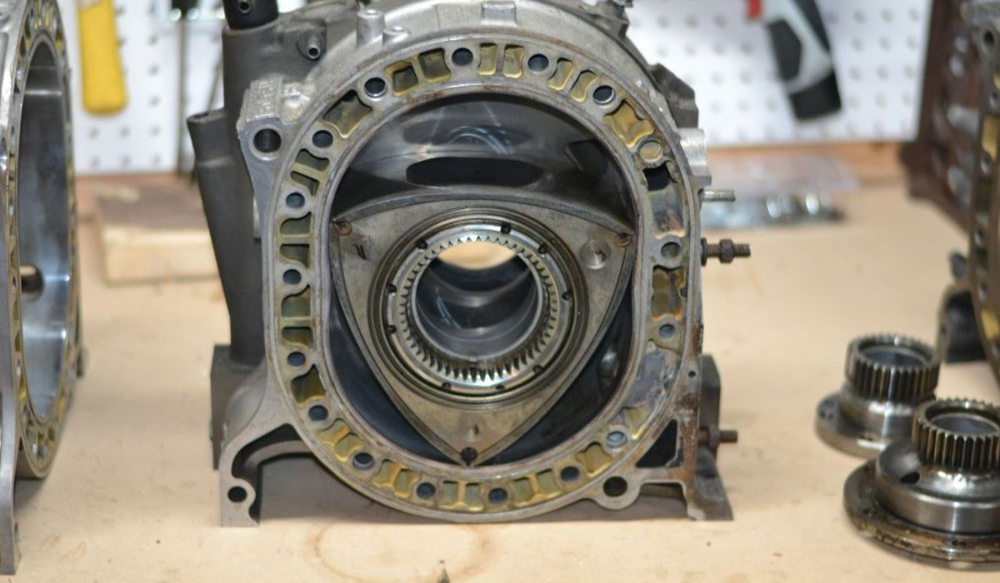

Cette machine est une des premieres voitures a utiliser un moteur rotatif.
Voici moteur rotatif de la mazda :

Ce qui fait en sorte que ce moteur est populaire est surtout à cause qu'il est très différent des autres
moteurs à cette époque mais aussi à cause de son son très formidable pour plusieurs, mais aussi
agressant pour le reste.